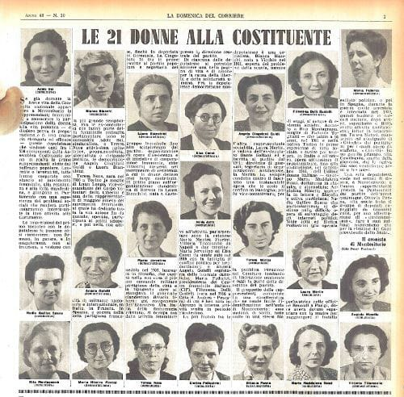

I VALORI
La Costituzione Italiana è al vertice della gerarchia delle fonti dell’ordinamento giuridico della Repubblica. Riconosciuta
come una costituzione rigida, lunga, votata, compromissoria, laica e democratica, è formata da 139 articoli e da 18 disposizioni transitorie
e finali.
Rappresenta la principale fonte del diritto della Repubblica Italiana, dalla quale dipendono gerarchicamente tutte le
altre norme giuridiche dell’ordinamento dello Stato.
GLI ANTENATI
Per avere un primo esempio in Italia di statuto costituzionale dobbiamo arrivare al 18 luglio del 1812, quando a Palermo il Parlamento
del Regno di Sicilia borbonico promulgò la Costituzione siciliana. Questa prevedeva un parlamento bicamerale formato da una Camera dei Comuni,
fatta da rappresentanti del popolo con carica elettiva, e una Camera dei Pari, costituita da ecclesiastici, militari e aristocratici con carica
vitalizia. Il re continuava a mantenere il potere di veto sulle leggi, poi soppresso nel 1816 con la nascita del Regno delle Due Sicilie.
Un altro anno importante fu il 1848, con la concessione dello Statuto albertino da parte di Carlo Alberto di Savoia che rese l’Italia una
monarchia costituzionale ereditaria, che si caratterizzava per la sua natura flessibile. Proprio per questo aspetto fu possibile portare l’Italia
da una forma di monarchia costituzionale pura a una di monarchia parlamentare. La concessione dello Statuto albertino fu revocata poi dal
successore di Carlo Alberto di Savoia, Vittorio Emanuele II.
LA NASCITA
Il testo della Costituzione nasce dopo la caduta del Fascismo e la fine della Seconda Guerra Mondiale. 
La sua storia e legata con la nascita della Repubblica Italiana. Il governo provvisorio dell’epoca chiese agli italiani, il 2 giugno 1946,
di scegliere se far rimanere l’Italia una Monarchia o se farla diventare una Repubblica e nella stessa data si svolse anche l’elezione
dell’Assemblea Costituente. I deputati da eleggere all’Assemblea Costituente erano in totale 573, ma si votò solo per 556 dal momento che
mancavano alcune province. Il 25 giugno l’Assemblea avviò i propri lavori eleggendo Giuseppe Saragat come proprio Presidente e iniziando il
dibattito in aula che si protrasse per quasi un anno.
La Costituzione Italiana fu approvata dall’Assemblea Costituente il 22 dicembre 1947, con 458 voti favorevoli, 62 contrari e nessun astenuto,
su un totale di 520 votanti. Fu poi promulgata dal capo provvisorio dello Stato Enrico De Nicola il 27 dicembre seguente e entrò in vigore
il 1º gennaio 1948.
LA STRUTTURA
Il documento è composto da 139 articoli e relativi commi, più 18 disposizioni transitorie e finali, suddivisi in quattro sezioni:
- Principi fondamentali (articoli 1-12)
- Diritti e Doveri dei cittadini (articoli 13-54)
- Ordinamento della Repubblica (articoli 55-139)
- Disposizioni transitorie e finali (disposizioni I-XVIII)
Nei suoi primi 12 articoli, esprime i principi fondamentali su cui poggia la vita dello Stato. Su tali principi fondamentali della
Costituzione devono essere interpretate le norme costituzionali quindi non devono essere usate come espressioni politiche. Quelli principali
sono: principi di democrazia, principio lavorista, di libertà, di eguaglianza e di pluralismo.
La prima parte della Costituzione si sofferma sui diritti e doveri del cittadino. I diritti sono riconosciuti e tutelati non solo con
riferimento a ciascun individuo, ma anche nelle formazioni sociali in cui si svolge la sua attività (famiglia, comunità locale, partiti,
sindacati, associazioni e altro). Oltre ai diritti sono elencati anche i doveri dei cittadini. Tra questi il diritto-dovere al lavoro,
la fedeltà alla Repubblica, il pagamento delle imposte, il dovere dei genitori di curarsi dei figli, il dovere di votare e di difendere
la patria.
La seconda parte della Costituzione include l’Ordinamento della Repubblica e descrive le caratteristiche del suo garante
identificato nel Presidente della Repubblica, del potere legislativo, di quello esecutivo, di quello giudiziario e degli enti locali e
degli istituti a garanzia della Costituzione stessa.